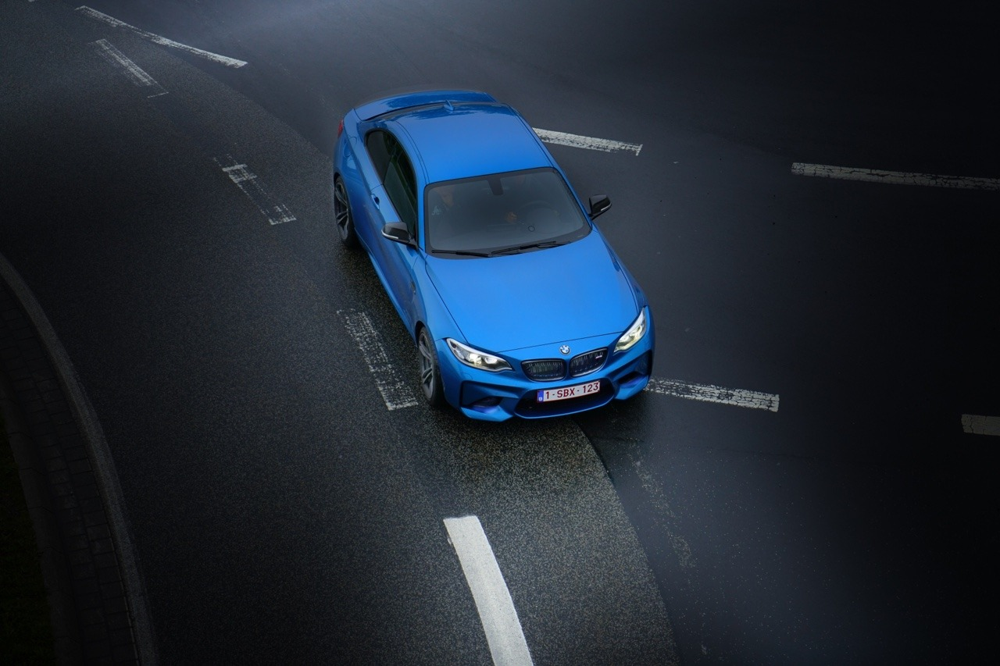

Tinting car windows is a straightforward yet technical process. A dark polyester film is used, which adheres to the inside of the glass. Its effects vary depending on the film, but as we’re sure you already know, it changes visibility from the inside of the vehicle to the outside as well as from the outside! It is almost impossible to see anything inside the car from a distance with the naked eye, while from the inside, it is possible to look outwards, only with faint darkness.
Privacy and comfort are some of the requirements we are not willing to negotiate when it comes to cars. We all enjoy a pleasant trip or not feeling so exposed to the street and traffic around us. Fortunately for many years, we’ve had the tinting process come to enhance these aspects. But what are the advantages? It helps to improve visibility when the vehicle is exposed to intense solar radiation.
It should be made clear that traditional tinting does not completely filter out UV rays, but allows some rays to pass through, blocking only part of the spectrum. Some tinted sheets have been developed with more specific filters capable of blocking UV radiation, with an effectiveness rate of 97%. Tinting is an excellent ally of security and privacy.
The opacity makes it impossible to see clearly from the outside who or what is inside the vehicle. This is very useful when objects are left inside the car; although the tinting does not hide them, it makes it difficult for them to be seen with precision by those on the road. It is essential to bear in mind that tinting is beneficial if it is carried out correctly and under the right regulations. If the opacity is very high, the incidence of light is low, which negatively affects the driver’s vision.
So what exactly does the law say? According to gov.uk the front windscreen of your vehicle must let at least 75% of light through and the front side windows must let at least 70% of light through - for vehicles first used after April 1st 1985. These regulations are law and you could get in trouble if you don’t follow them. Ensure you get your car windows tinted by an expert and trusted business. If you’re thinking about getting your vehicle’s windows tinted feel free to give us a call on 01993 881403 and speak with one of our experts! Don’t forget to keep up to date with us on Facebook too:
https://www.facebook.com/Oxfordperformanceautos/